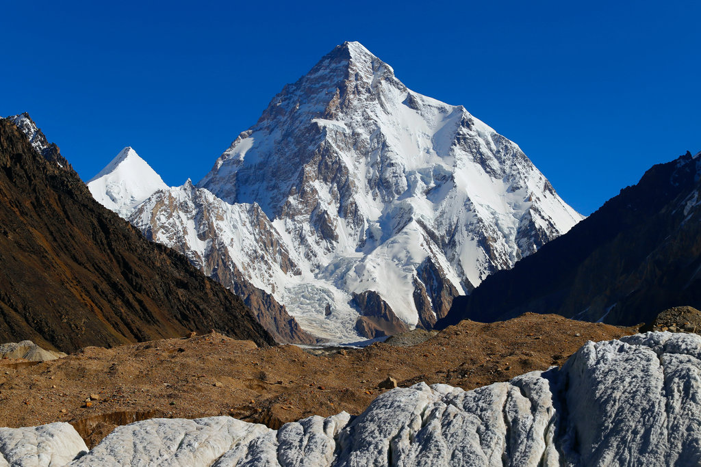
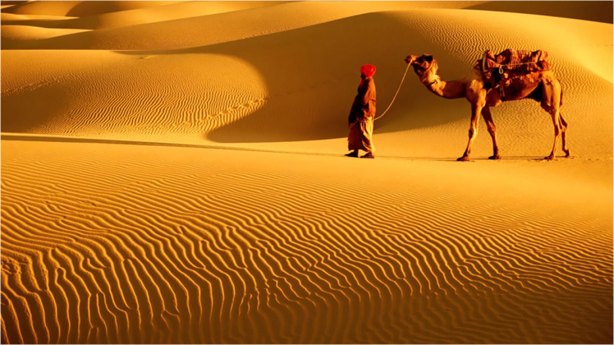
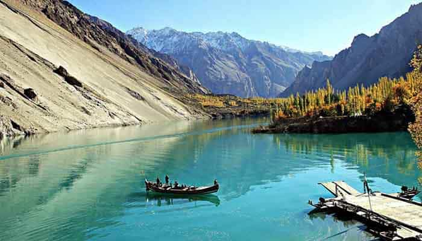
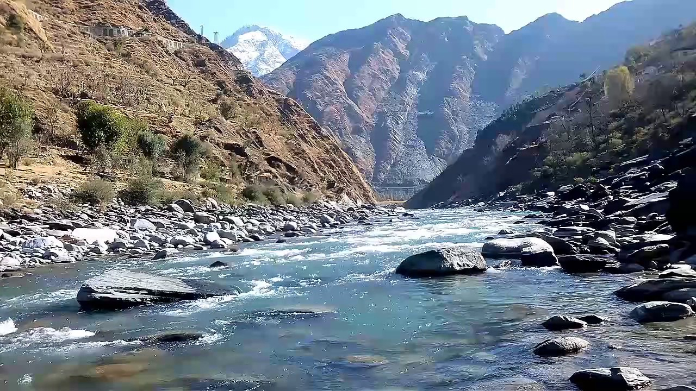

Natural Beauty of Pakistan
Natural beauty is un matched. Pakistan have world most beautiful places for visit, specially at its best in
northern
areas of Pakistan and Kashmir region. This part of the country is famous all around the world because of sky
high
mountains, lush green valleys, mighty rivers, beautiful lakes, and amazing wildlife.Pakistan has an
extraordinary and magnificent variety of landscapes ranging from five of the highest mountain peaks in the
world to some of the largest and unique plateaus in the west and finally, awe-inspiring flat Indus plains in
the east. It is a land in which the entire canvas of its topography is coloured with picturesque valleys,
treacherous mountaintops, serene bodies of water and lush green meadows.



